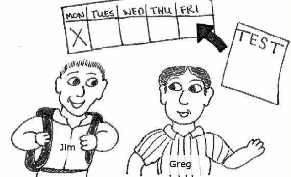
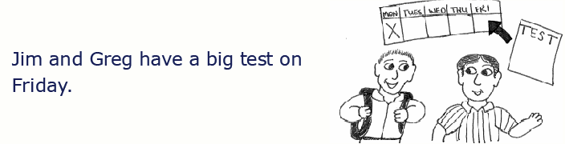
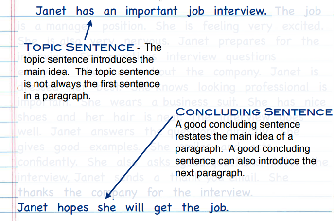

A summary tells the main idea of the storty, the news, a report, or any information. A summary tells the most important facts or ideas. A summary is useful for many things.
When you introduce yourself, you give a summary. You tell only the facts that people want to hear.
In a job interview, you talk about your education and work experience.
With new friends, you can talk about your hobbies and interests.
If you give too much information, it is not a summary. A summary gives enough information to understand the main idea.
A summary is much shorter than the original text. If the original text is one paragraph, a good summary is only one or two sentences. If the original text has many paragraphs, a good summary is only one paragraph.
A summary also tells important facts and supporting ideas. Titles are useful for understanding the main idea. However, a title is not a summary. A summary uses complete sentences.
A summary uses different words from the original text. When you write a summary, use your own words. Use synonyms. Synonyms are different words that have the same meaning.
easy = simple
hard = difficult
fast = quick
great = terrific
Most common words in the English language have synony,s. A thesaurus can help you find good synonyms. Word Web Online is s useful thesaurus.
A summary is like describing a picture in one sentence. Look at each picture. Decide what is happening. Write one sentence to describe each picture.



Now read the original text.
Compare your sentences with your original text. Did your sentences tell a similar story? If so, you wrote a good summary!
Read the text. You need to understand the main idea.
Don't look at the text. Remember as many facts as you can. If you are studying with someone, tell them about what you read.
Rewrite the most important information in your own words. Include facts and ideas that support the main idea.
Janet has an important job interview. The job is a manager position. She is feeling very excited. She is also very nervous. Janet prepares for the interview. She practices interview questions every day. She learns about the company. Janet is dressed her best. She knows looking professional is important. She wears a business suit. She has nice shoes and her hair is neat. The interview goes well. Janet answers the questions directly. She gives good examples. She smiles and acts confidently. She also asks good questions. After the interview, Janet sends a thank you email. She thanks the company for the interview.
Remember as many facts as you can. Don't look at the text.
Now, look at the text. Look at the topic (beginning) and concluding (final) sentences. What is the main idea?
Main Idea: Janet has an important job interview for a job she hopes to get.
What are the supporting ideas? A T-Chart can help you organize the supporting ideas and details.
| Supporting Idea | Details |
|---|---|
| Janet prepares for the interview. | She practices interview questions everyday. She learns about the company. |
| Supporting Idea | Details | Janet is dressed her best. |
|---|
| Supporting Idea | Details | Janet answers the questions directly. She gives good examples. She smiles and acts confidently. |
|---|
| Supporting Idea | Details | After the interview. Janet sends a thank you email. |
|---|
To help you start, write just the main idea and the supporting ideas.
Main Idea: Janet has an important job interview for a job she hopes to get.
Supporting Idea #1: Janet prepares for the interview.
Supporting Idea #2: Janet is dressed her best.
Supporting Idea #3: The interview goes very well.
Supporting Idea #4: After the interview, Janet sends a thank you email.
Remember the keys to writing a summary.
Your summary should be short. The original text is one paragraph, so your summary should be one or two sentences.
Decide which supporting ideas and details are the most important. You don't have to include all of the supporting ideas.
Use your own words as much as possible.
Janet has a good job interview because she prepares well.
Janet gets ready for an important job interview. She practices questions and learns about the company.
Janet wants an important job. She prepares for the interview by practicing.
Janet prepares for a job interview. She does very well because she acts professionally.
All of these sentences are good summaries. The details are different, but the main idea is clear.
A summary is shorter than the original text. A summary tells the main idea and the most important facts. A summary uses your own words.